Week 6 — Max-Flow Basics
CURRENT WEEK· 2026-06-22 → 06-28 · Modules MF1 (Ford-Fulkerson), MF2 (Max-Flow = Min-Cut)
Due this week
| Item | Type | Note |
|---|---|---|
| HW6 | written | flow modeling / reductions |
| HW7 | coding | implement max-flow |
| Quiz 5 | graph content | covers graph theory |
Watch the lecture (Max Flow Basics)
Learning objectives
- Model a real problem as a flow network and reduce it to a single max-flow call.
- Build the residual graph and run Ford-Fulkerson by hand.
- State and use the max-flow / min-cut theorem; recover a min-cut from a final residual graph.
- Quote the O(mC) runtime and explain why it's only pseudo-polynomial.
Core concepts
Flow network
Definition. A directed graph G = (V, E) with a source s, a sink t, and a capacity ce ≥ 0 on every edge. (Course-clean form: no edge into s, none out of t.)
Intuition: pipes with capacity limits; push as much "stuff" from s to t as the pipes allow.
Feasible flow
Definition. An assignment fe to each edge is a feasible flow if it respects capacity and conserves flow at every internal vertex:
$$ \underbrace{0 \le f_e \le c_e}_{\text{capacity}} \qquad\text{and}\qquad \underbrace{\sum_{(u,v)\in E} f_{uv} \;=\; \sum_{(v,w)\in E} f_{vw}}_{\text{conservation, } \forall v\in V\setminus\{s,t\}}. $$
Value of a flow = net flow leaving the source: |f| = ∑(s, v) ∈ Efsv.
Residual graph Gf
Definition. Given a flow f, the residual graph records remaining room to move flow. For each edge (u, v) with flow fuv on capacity cuv:
- a forward residual edge u → v of capacity cuv − fuv (room to push more), and
- a backward residual edge v → u of capacity fuv (room to cancel / reroute).
The backward edges are what let the algorithm undo earlier greedy choices — the key to correctness.
Augmenting path
Definition. Any s → t path in Gf using only edges of positive residual capacity. Its bottleneck is the minimum residual capacity along it; pushing that much strictly increases |f|.
s-t cut
Definition. A cut (S, T) partitions V with s ∈ S, t ∈ T. Its capacity counts only forward edges crossing it: c(S, T) = ∑u ∈ S, v ∈ Tcuv. Every cut is an upper bound on every flow (|f| ≤ c(S, T)) — flow must cross the cut to reach t.
Algorithms
Ford-Fulkerson — O(mC)
- Start with zero flow (fe = 0 everywhere).
- Build the residual graph Gf.
- Find an augmenting s → t path in Gf (any search — DFS/BFS).
- Compute its bottleneck capacity b; push b units: +b on forward edges, −b on the matching backward edges. Update Gf.
- Repeat 3–4 until no augmenting path exists. The current f is maximum.
Runtime O(mC) where m = |E| and C is the max-flow value: each augmentation adds ≥ 1 unit (integer capacities) and costs O(m) to find a path. Pseudo-polynomial — depends on the magnitude C, not just the input size, so large capacities can blow it up. (Next week's Edmonds-Karp fixes this with BFS.)
| Algorithm | Augmenting path | Runtime | Note |
|---|---|---|---|
| Ford-Fulkerson | any s–t path | O(mC) | pseudo-polynomial |
| Edmonds-Karp (W7) | shortest via BFS | O(m2n) | strongly polynomial |
Key theorems & results
Max-Flow / Min-Cut theorem
maxf feasible|f| = min(S, T) cutc(S, T).
Three equivalent statements (each implies the others):
- f is a maximum flow.
- Gf has no augmenting s → t path.
- There exists a cut (S, T) with c(S, T) = |f|.
Recovering the min-cut. When Ford-Fulkerson stops, let S = all vertices reachable from s in the final residual graph (and T the rest). Then (S, T) is a minimum cut, and every edge from S to T is saturated (fe = ce) while every edge from T to S carries 0.
Worked example (tiny max-flow / min-cut)
Network: s → a (cap 3), s → b (cap 2), a → t (cap 2), b → t (cap 3), a → b (cap 1).
- Augment s → a → t, bottleneck 2 → |f| = 2.
- Augment s → b → t, bottleneck 2 → |f| = 4.
- Augment s → a → b → t, bottleneck min (3 − 2, 1, 3 − 2) = 1 → |f| = 5.
- No augmenting path remains. From s in Gf only {s} (and maybe a) is reachable; the min-cut {s} vs rest has capacity 3 + 2 = 5 = |f|. Max-flow = min-cut = 5.
Common pitfalls / exam traps
- Forgetting backward residual edges — without them you can't reroute and may report a non-max flow.
- Counting backward edges in a cut's capacity — only forward S → T edges count.
- Calling O(mC) "polynomial" — it's pseudo-polynomial.
- Re-deriving Ford-Fulkerson internals on an exam instead of reducing to the black box.
How to answer (HW / exam)
Reduce, don't reinvent. Transform the input/output around the max-flow black box — do not re-derive Ford-Fulkerson internals. State your network (vertices, edges, capacities, s, t), call max-flow, then interpret the result (e.g. min-cut = the bottleneck set). Cite runtime from the common runtimes conventions.
Go deeper — readings · guidance · transcript
- Reading: DPV §7.2 — Flows on networks
- Rules: Usable black boxes for graphs · Graph theory guidance · Common runtimes
- Notes: full course notes · ga-notes.pdf
- All files: lectures/ · transcripts/ · readings/ · guidance/ · notes/
Comprehensive Notes
Full lecture notes for this week's modules, with the lecture figures inline. Built from the canonical topic notes (MF1, MF2).
MF1 — Ford-Fulkerson Algorithm
Problem setup. We are sending a supply from a vertex s to a destination t. The supply could be internet traffic, electricity, or physical products — in every case there is a start s, an end t, and a medium with a capacity. An electrical wire has a maximum capacity (overload it and sparks fly); a sewage pipe can only carry so much before it backs up; a road has a maximum flow before gridlock. We model each situation as a network graph with a designated start s, end t, and capacity weights on the edges. Capacity is always positive.
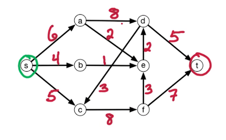
Flow network (formal). A flow network consists of
- a directed graph G = (V, E),
- source and sink vertices s, t,
- a capacity ce > 0 for each edge e ∈ E.
(Nomenclature varies: CLRS forbids both (u, v) and (v, u) being in E; Wikipedia does not.)
Max-flow problem. Given the network, find flows fe for e ∈ E subject to:
- Capacity constraint — flow cannot exceed capacity: ∀e ∈ E, 0 ≤ fe ≤ ce.
- Conservation of flow — at each internal vertex, inflow equals outflow: $$ \forall v \in V \setminus \{s,t\}:\quad \sum_{\overrightarrow{wv}\,\in E} f_{wv} \;=\; \sum_{\overrightarrow{vz}\,\in E} f_{vz}. $$ Find a valid flow of maximum size, where $\text{size}(f) = $ flow out of $s = $ flow into t.
Consider the following flow network (capacities in red):
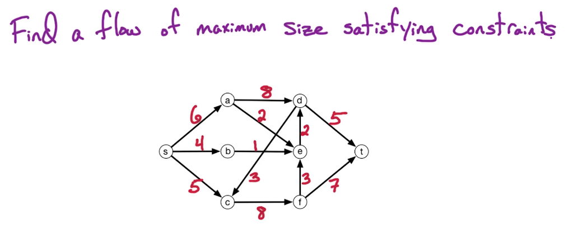
Computing a max flow by hand is tedious and error-prone, and the answer is not unique. The network below has three distinct max flows, all of size size(f) = 12 (with 5 and 7 arriving at t):
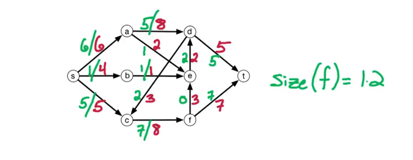
Key idea. Note the cycle c → f → e → d → c. Cycles are allowed in a flow network, but routing flow around one never helps — by conservation it cannot increase the size. The problem is well-defined regardless of cycles.
Anti-parallel edges. Edges in opposite directions between the same two vertices are generally not allowed (a flow network direction is like a one-way street). To handle them, insert a vertex along one edge, keeping the new edges at the same capacity as the original so the network's character is preserved. Left: a network with anti-parallel edges; right: after handling them.
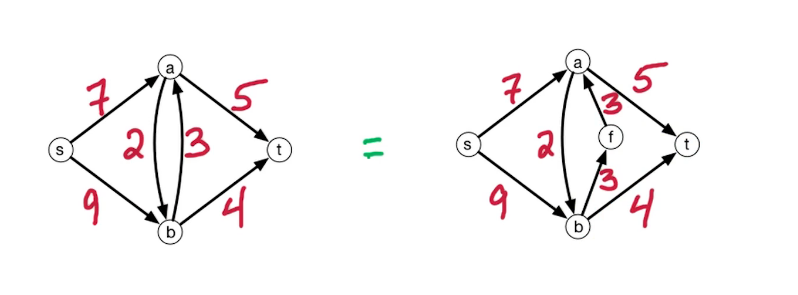
Toy example. We use this small network to visualize the algorithm.
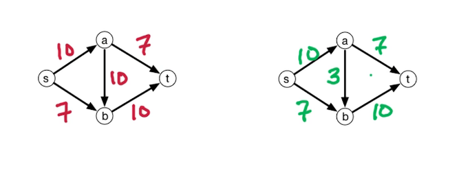
One iteration of the simple algorithm:
Begin with three graphs — the input, the flow initialized to 0, and the availability.
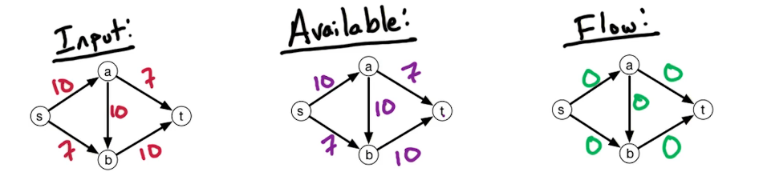
Find a path P from s to t with available capacity (highlighted green in the middle availability graph).
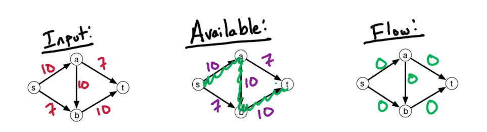
Compute the capacity along the path: c(P) = mine ∈ P(ce − fe) — the max flow we can push along P.
Augment the flow by c(P) along P.
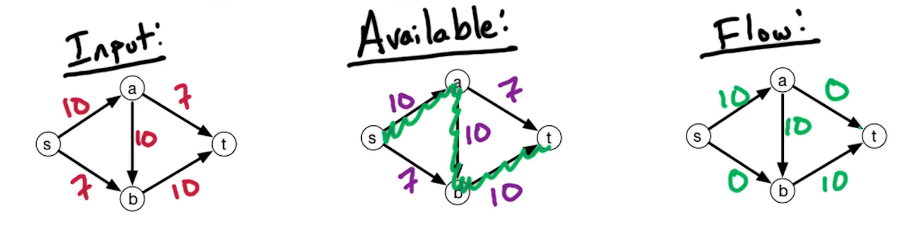
Then repeat from step 2, updating available capacity to reflect the augmentation.
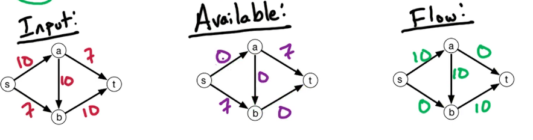
Summary of the approach:
- Start with fe = 0, ∀e ∈ E.
- Find an s-t path P with available capacity.
- Let c(P) = mine ∈ P(ce − fe).
- Augment f by c(P) along P.
- Go back to 2 and repeat until no s-t path with available capacity remains.
Residual networks
After the run above there is still capacity along some edges — e.g. (s, b) has 7 and (a, t) has 7 available. To use it we want a path s → b → a → t. We have s → b and a → t, but no edge b → a. The middle "availability" graph fails to represent everything the flow graph allows, precisely because there is no b → a edge.
So we augment by adding a backward edge b → a with available capacity 10 (matching the flow on a → b). Its flow offsets the flow along a → b. This is the residual network.
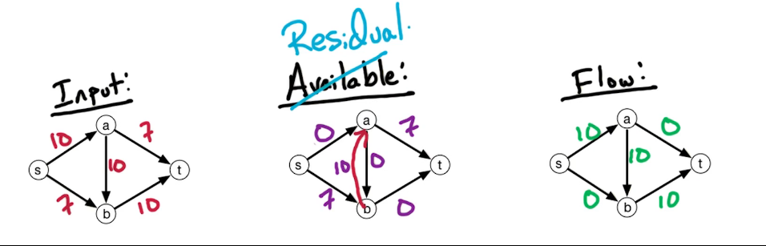
Updating the flow, the size increases from 10 to 17:
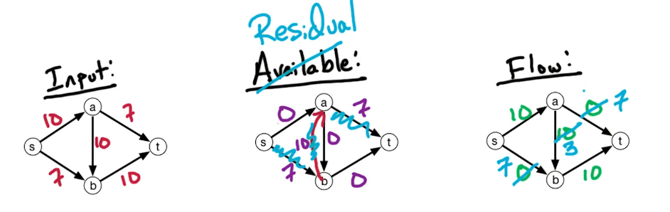
Residual network (formal). Let Gf = (V, Ef) be the residual network for flow network G = (V, E) with capacities ce and flow fe. Construct it by:
- if $\overrightarrow{vw} \in E$ and fvw < cvw: add forward edge $\overrightarrow{vw}$ to Gf with residual capacity cvw − fvw;
- if $\overrightarrow{vw} \in E$ and fvw > 0: add backward edge $\overrightarrow{wv}$ to Gf with capacity fvw.
As a residual-capacity case function: $$ C_f(u,v) = \begin{cases} c(u,v) - f(u,v) & \text{if } (u,v) \in E,\\ f(u,v) & \text{if } (v,u) \in E,\\ 0 & \text{otherwise.} \end{cases} $$
Ford-Fulkerson algorithm
- Set fe = 0 for all e ∈ E.
- Build the residual network Gf for the current flow f.
- Check for an s-t path P in Gf (via DFS or BFS); if none, output f.
- Given P, let $c(P) = $ min capacity along P in Gf.
- Augment f by c(P) units along P (increase every edge on the path by the largest amount that exceeds no capacity).
- Repeat until no such s-t path exists.
Correctness follows from the Max-Flow = Min-Cut theorem (next module).
Running time. Assume integer capacities; each round augments the flow by ≥ 1 unit, so with $C = $ size of the max flow there are at most C rounds. Building the residual network and running DFS/BFS each cost O(|V|+|E|) = O(|E|), which dominates. Total: O(C ⋅ |E|) — pseudo-polynomial (it depends on the magnitude of the max flow / capacities, not just the input size, and assumes integer capacities). The next module's Edmonds-Karp removes both issues with runtime O(m2n); Orlin (2013) achieves O(mn), beyond this course's scope.
MF2 — Max-Flow = Min-Cut
Recall Ford-Fulkerson: it stops when there is no augmenting path in the residual graph Gf* of the final flow f*.
Lemma. For a flow f*, if there is no augmenting path in Gf* then f* is a max flow. (Checking whether a given f is max takes O(|E|): build the residual graph, then look for an s-t path with available capacity.)
Cut. A cut partitions V into two sets, V = L ∪ R (left and right). An s-t cut is a cut with s ∈ L and t ∈ R. The capacity of the cut is the total capacity from L to R: $$ \text{capacity}(L,R) = \sum_{\overrightarrow{vw}\,\in E,\ v\in L,\ w\in R} c_{vw}. $$ Only L → R edges count — flow goes from the source in L to the sink in R; R → L edges do not help. A cut is any partition of vertices (it ignores edges), need not be a simple linear partition, and may disconnect vertices.
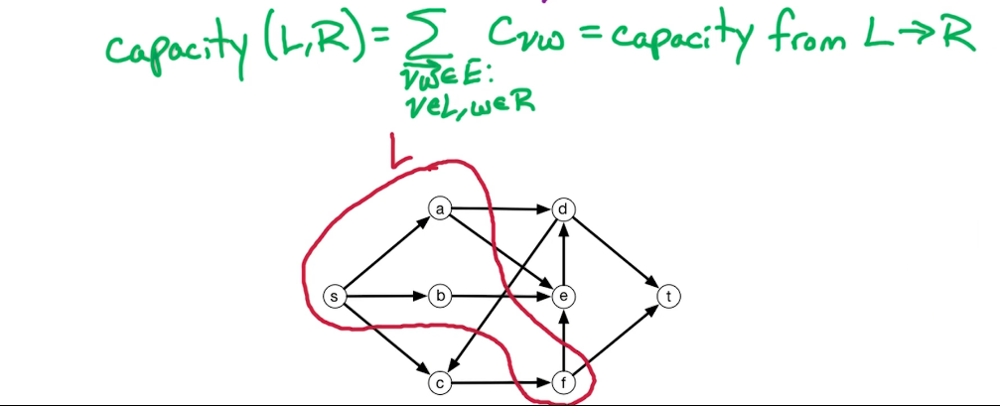
Min s-t-cut problem. Input: a flow network with positive capacities. Output: the s-t cut (L, R) of minimum capacity. One cut of our example has capacity 27 = 8 + 2 + 2 + 5 + 3 + 7:
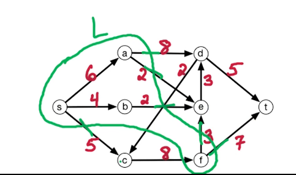
A better cut has capacity 12 — which equals the max flow:
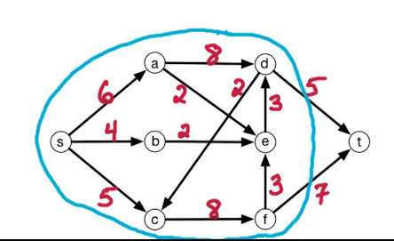
Max-Flow / Min-Cut Theorem. For any flow network, the size of the max flow equals the minimum capacity of an s-t cut.
Proof outline. Prove (1) max flow ≤ min s-t cut, and (2) max flow ≥ min s-t cut; together they give equality.
Part (1): for any flow f and any s-t cut (L, R), size(f) ≤ capacity(L, R). The flow must leave L to reach t, and it can only leave through L → R edges, whose total capacity bounds it (e.g. 27 above).
Claim: size(f) = fout(L) − fin(L) (not a typo), where $$ f_{out}(L) = \sum_{\overrightarrow{vw}\,\in E,\ v\in L} f_{vw}, \qquad f_{in}(L) = \sum_{\overrightarrow{wv}\,\in E,\ v\in L} f_{wv}. $$ Summing outflow minus inflow over all vertices of L, the internal L-L edges cancel; the source has inflow 0; conservation makes every other internal balance vanish, leaving fout(s) = size(f).
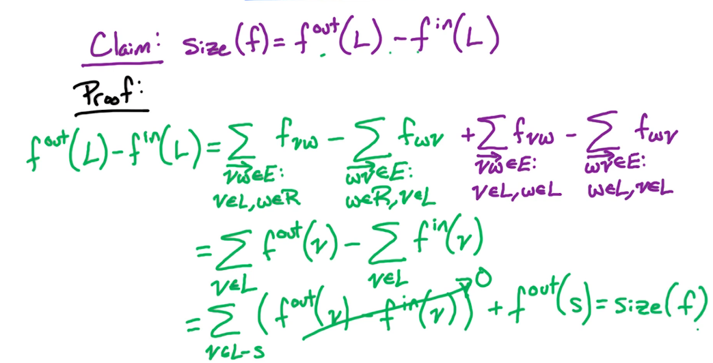
Since fin(L) ≥ 0 and fout(L) ≤ capacity(L, R): size(f) = fout(L) − fin(L) ≤ fout(L) ≤ capacity(L, R), so max flow ≤ min s-t cut capacity.
Part (2): take f* from Ford-Fulkerson — it has no s-t path in Gf*, so t is unreachable from s there. Let $L = $ vertices reachable from s in Gf* (so t ∉ L) and R = V − L. This (L, R) is a valid s-t cut, and we show size(f*) = capacity(L, R), giving maxfsize(f) ≥ size(f*) = capacity(L, R) ≥ minL, Rcapacity(L, R).
Properties used. Left: a network with capacities (red) and a max flow (green); right: the residual Gf*.
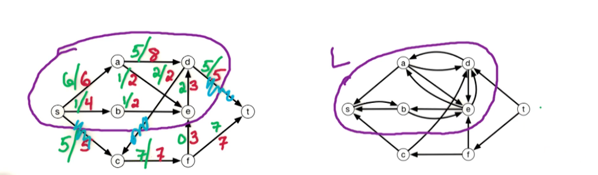
Every potential outflow edge from L (e.g. (d, t), (d, c), (s, c)) is absent from the residual — only its inverse appears — because if a forward residual edge survived, t would be reachable from s, contradicting "no s-t path." So these L → R edges are saturated: $$ \forall \overrightarrow{vw}\in E,\ v\in L,\ w\in R:\quad f^*_{vw} = c_{vw}, \qquad f^{*}_{out}(L) = \text{capacity}(L,R). $$ And every R → L edge carries 0 flow: $$ \forall \overrightarrow{zy}\in E,\ z\in R,\ y\in L:\quad f^*_{zy} = 0, \qquad f^{*}_{in}(L) = 0. $$ Therefore size(f*) = fout*(L) − fin*(L) = capacity(L, R) − 0, as wanted. This simultaneously proves the earlier lemma, the correctness of Ford-Fulkerson, and shows how to construct a min s-t cut (the reachable set L).
DPV chapter exercises
DPV chapter exercises (exact, from the textbook)
Exact end-of-chapter exercises, parsed from the DPV chapter PDFs.
DPV Ch 7 — Linear Programming — open exercises · chapter PDF
Agent hint
Flow question → confirm it's Week 6 via CURRENT_WEEK, model as a network, call max-flow, read the min-cut from reachability in Gf. Never modify the black box. Compare with W07 (Edmonds-Karp, O(m2n)) if asked about runtime.